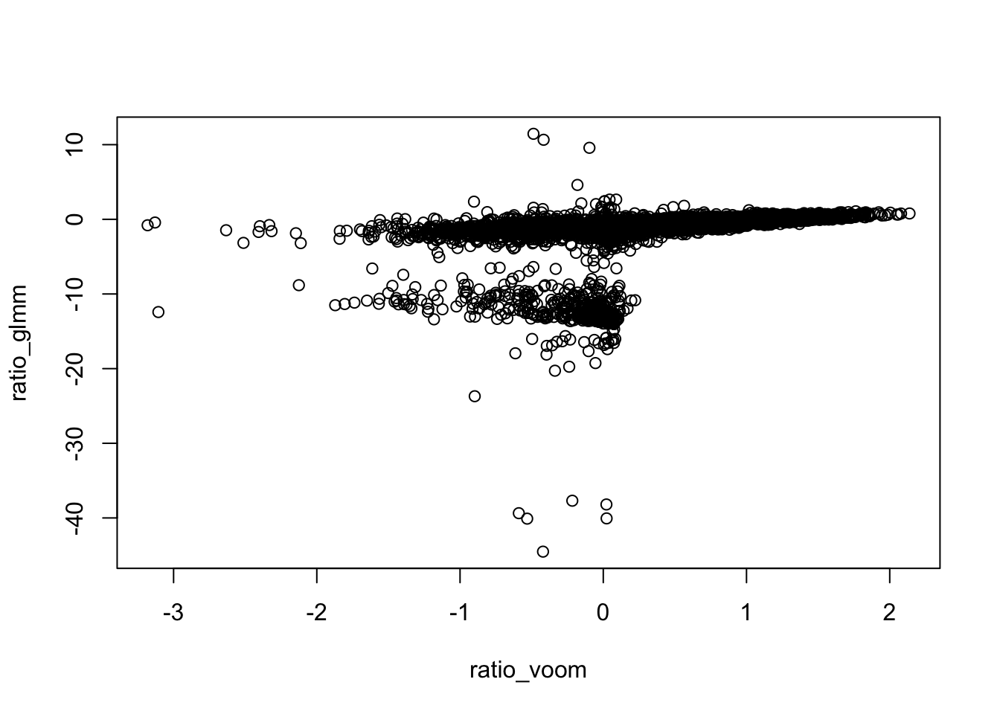
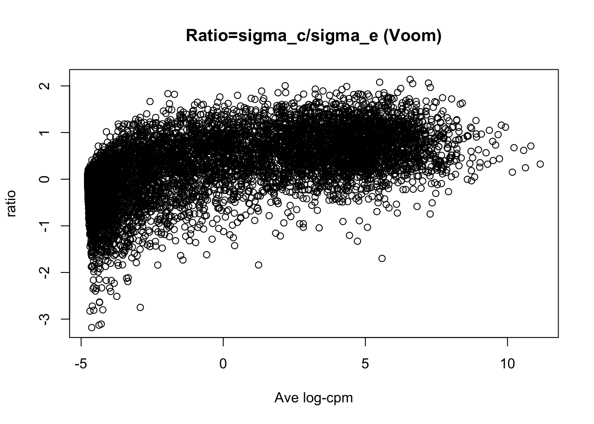
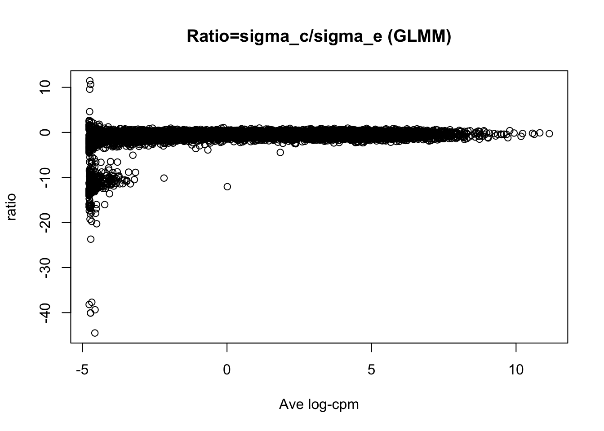

Last updated: 2016-02-10
Code version: 4805492d8e6eeaa8da3fd2ee38cdca1eb6c816ea
This is a template for writing reports with R Markdown.
Suppose we have RNA-seq data of \(N\) samples from \(K\) groups. We want to estimate \(r_g\), the ratio of within-group variation and between-group variation for each gene, i.e. do gene-wise variance decompostion analysis.
Two possible ways:
Then \(\hat{r}_g^{(GLM)} = \frac{\hat{\sigma_{ge}^2}}{\hat{\sigma_{gc}^2}}\).
First apply voom transformation on counts, then do ANOVA for the transformed data: \(\hat{r}_g^{(voom)} = MST_g/MSE_g\).
Extract GTEx RNA-seq data from 10 tissues, with 50 samples for each tissue.
library(edgeR)Loading required package: limmalibrary(limma)
datamaker = function(args){
counts = NULL
for (tis in args$tissue){
rawdata = read.table(paste0("/Volumes/PERSONAL/MS/gtex/tissues/",tis,".txt"),header=TRUE)
counts = cbind(counts,as.matrix(rawdata[,1:args$Nsamp]))
}
rm("rawdata")
# Remove genes without any reads
counts = counts[apply(counts,1,sum)>0,]
condition = factor(rep(1:length(args$tissue),each=args$Nsamp))
# Voom transformation
dgecounts = DGEList(counts=counts,group=condition)
dgecounts = calcNormFactors(dgecounts)
design = model.matrix(~condition)
v = voom(dgecounts,design,plot=FALSE)
dgecounts = estimateDisp(dgecounts, design, robust=TRUE)
avelogcpm = dgecounts$AveLogCPM
# meta data
meta = list(args=args)
# input data
input = list(counts=counts, condition=condition, v=v, avelogcpm=avelogcpm)
data = list(meta=meta,input=input)
return(data)
}
# Compute the ratios (sigma_c/sigma_e) for each gene
# Model: y~Pois(lambda), lambda=mu+b_cond+e, where b_cond~N(0,sigma_c^2), e~N(0,sigma_e^2)
varcomp_glmm = function(counts, condition){
apply(counts,1,glmm_ratio,condition=condition)
}
library(lme4)Loading required package: Matrixglmm_ratio = function(y,condition){
obs = factor(1:length(y))
fit = try(glmer(y~(1|condition)+(1|obs),family=poisson))
# Ratio = sigma_c/sigma_e
if (class(fit)=="try-error"){
ratio = NA
}else{
ratio = sqrt(as.numeric(summary(fit)$varcor$condition)/
as.numeric(summary(fit)$varcor$obs))
}
return(ratio)
}
varcomp_voom = function(v, condition){
combo = cbind(v$E,v$weights)
apply(combo,1,voom_ratio,condition=condition)
}
voom_ratio = function(ynweights,condition){
y = ynweights[1:(length(ynweights)/2)]
weights = ynweights[(length(ynweights)/2+1):length(ynweights)]
fit = lm(y~condition, weights=weights)
ratio = sqrt(max(anova(fit)$F[1]-1,0)/length(unique(condition)))
return(ratio)
}args = list(tissue=c("Brain-Amygdala",
"Brain-Anteriorcingulatecortex(BA24)",
"Brain-Caudate(basalganglia)",
"Brain-CerebellarHemisphere",
"Brain-Cerebellum",
"Brain-Cortex",
"Brain-FrontalCortex(BA9)",
"Brain-Hippocampus",
"Brain-Hypothalamus",
"Brain-Nucleusaccumbens(basalganglia)"),
Nsamp=50)
#data = datamaker(args)Compute \(\hat{r}_g^{(GLM)}\) and \(\hat{r}_g^{(voom)}\) for top 10,000 genes and compare them.
load("/Volumes/PERSONAL/MS/fash/appli_gtex.RData")
#r.voom = varcomp_voom(data$input$v[1:10000,], data$input$condition)
#r.glmm = varcomp_glmm(data$input$counts[1:10000,], data$input$condition)
plot(log(r.voom), log(r.glmm), xlab="ratio_voom", ylab="ratio_glmm")
plot(data$input$avelogcpm[1:10000],log(r.voom),xlab="Ave log-cpm",ylab="ratio",main="Ratio=sigma_c/sigma_e (Voom)")
plot(data$input$avelogcpm[1:10000],log(r.glmm),xlab="Ave log-cpm",ylab="ratio",main="Ratio=sigma_c/sigma_e (GLMM)")
Seems \(\hat{r}_g^{(GLM)}\) can be very unstable when log-cpm is low? \(\hat{r}_g^{(voom)}\) is a smooth function of log-cpm?
sessionInfo()R version 3.2.3 (2015-12-10)
Platform: x86_64-apple-darwin13.4.0 (64-bit)
Running under: OS X 10.10.5 (Yosemite)
locale:
[1] en_US.UTF-8/en_US.UTF-8/en_US.UTF-8/C/en_US.UTF-8/en_US.UTF-8
attached base packages:
[1] stats graphics grDevices utils datasets methods base
other attached packages:
[1] lme4_1.1-10 Matrix_1.2-3 edgeR_3.10.5 limma_3.24.15 knitr_1.12
loaded via a namespace (and not attached):
[1] Rcpp_0.12.2 lattice_0.20-33 digest_0.6.8 MASS_7.3-45
[5] grid_3.2.3 nlme_3.1-122 formatR_1.2.1 magrittr_1.5
[9] evaluate_0.8 stringi_1.0-1 minqa_1.2.4 nloptr_1.0.4
[13] rmarkdown_0.9.2 splines_3.2.3 tools_3.2.3 stringr_1.0.0
[17] yaml_2.1.13 htmltools_0.3